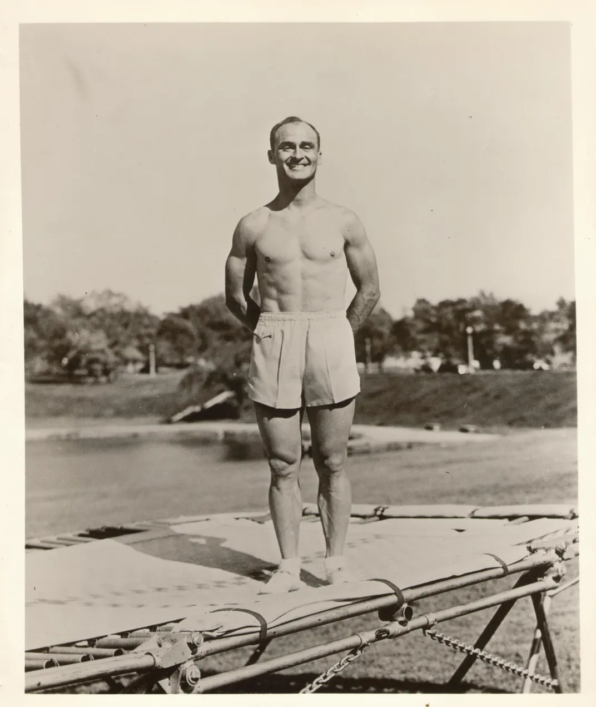
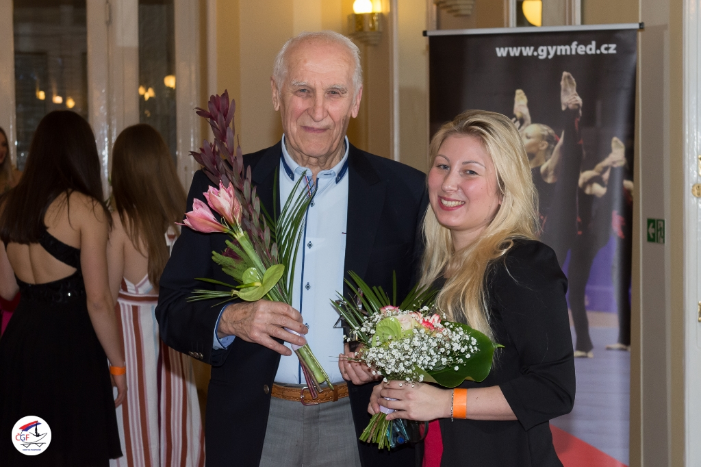
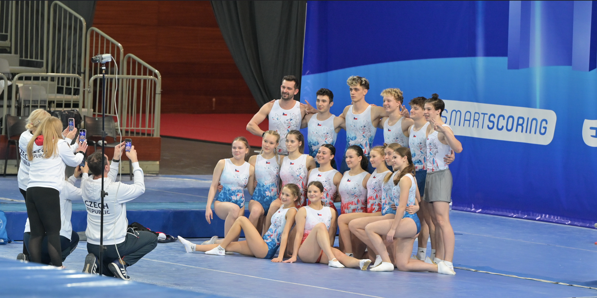

Historie
V rokách 1934-36 studenti Univerzity v Iowě George Nissen a Larry Griswold svaří první ocelový rám „trampolíny“ (název vypůjčili ze španělského trampolín).Poté byl roce 1948 1. americký národní šampionát v Texasu. Později v 21. březnu 1964 bylo 1. mistrovství světa v Londýně, ktéré tam bylo znova i rok později. Od roku 1981 je trampolína na světových hrách.
V roce 1999 se trampolína stáva součástí "FIG" (národní gymnastická federace).V dnu 22. září 2000 Olympijská premiéra v Sydney. A nakonec v roce 2010 byli trampolíny zařazeny do olympiady mládeže
^
|
George Nissen na trampolíně
Historie v České Republice.
Historie trampolínové gymnastiky v Česku (a dříve v Československu) se začala psát roku 1964, kdy armádní trenér Ivo Fibiger při služební cestě do Alžíru poprvé spatřil trampolínu. Po návratu do Prahy uspořádal velkolepou exhibici s osmdesáti nafukovacími trampolínami, čímž okamžitě vzbudil nadšení veřejnosti i sportovních funkcionářů. Dva roky nato, v roce 1970, spojil síly s Karlem Přechem a založili první Národní trampolínovou komisi, která dala vznikající disciplíně pevná pravidla a vytvořila zázemí pro kluby, trenéry a rozhodčí.
Ohlas rychle nabýval na síle a už v roce 1972 hostila Praha-Podolí mezinárodní závod Friendship International, mezinarodní závod přátelství, dnes druhý nejstarší nepřetržitě pořádaný turnaj v Evropě, který je dnes v Jablonci.
Roku 1975 se v Litoměřicích konalo první mistrovství České republiky a současně v Rožnově pod Radhoštěm premiérové federální mistrovství Československa. Mezinárodní průlom přišel roku 1980, kdy československá reprezentace poprvé startovala na mistrovství Evropy ve švýcarském Brigu.
Po rozpadu federace pokračovali čeští skokani a Petra Vachníková obsadila při olympijské premiéře disciplíny v Sydney 2000 11. místo a stala se první českou olympioničkou v trampolínách. Na její stopu navázala Lenka Honzáková-Popkin v Pekingu 2008 a Zita Frydrychová v Londýně 2012.
^
|
Ivo Fibiger a Zita Frydrychová
Aktualně se Česko drží a jezdí na velkou většinu mezinarodních zavodů a občas získa i nějaké místo.
